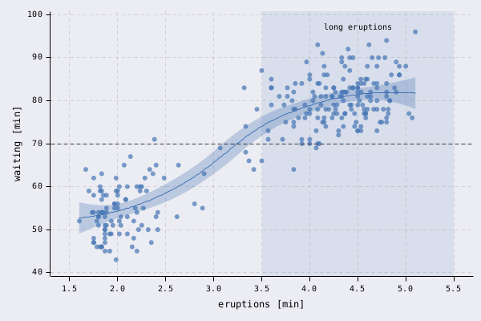
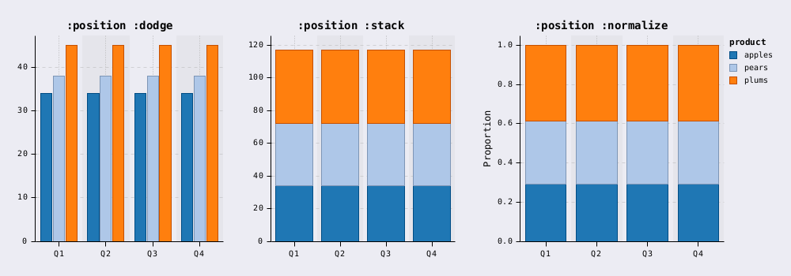
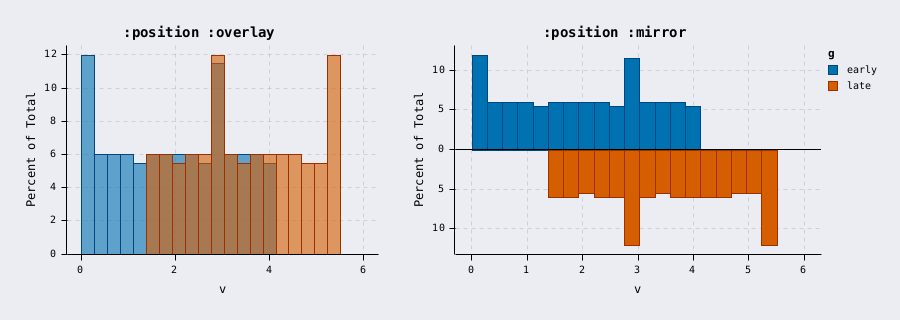
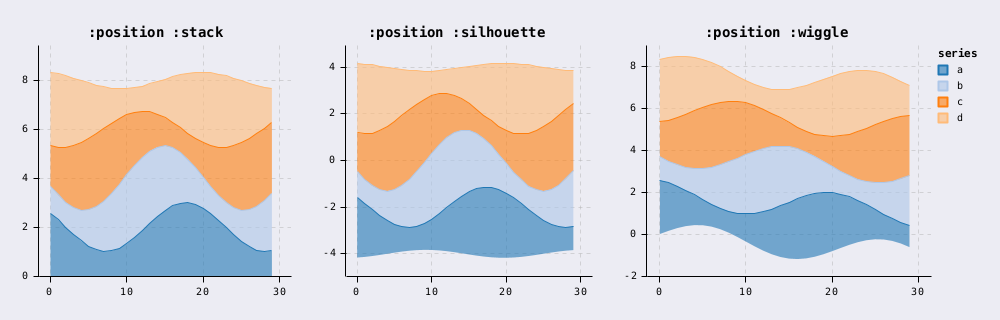

7 Layering and position
Charts are drawn in the order of :charts, each over the previous ones, and all of them share the plot’s scales. Grouped marks of one chart are placed by its :position option: side by side, stacked, normalized or overlaid.
(ns reference.layering-position
(:require [fastmath.core :as m]
[cljplot2.chart :as chart]
[cljplot2.core :as plot]
[cljplot2.describe :as describe]
[notebook-utils :as nu]))7.1 Layers
A layer is any chart; annotation charts (rule, rect, text, function, image) take literal positions or a function instead of data and inherit only the plot’s facet keys. The positions of rule, rect and text count for the scales unless :extent false (the Annotation options group, shown at work in Shared options):
| Option | Type | Default | Description |
|---|---|---|---|
| :extent | true or false or nil | true | include the positions in the scale extents |
Data: Old Faithful geyser eruptions, R datasets package faithful (Härdle 1991; Azzalini & Bowman 1990); licence: Part of R (GPL-2 | GPL-3).
(def faithful (nu/dataset :faithful))| eruptions | waiting |
|---|---|
| 3.6 | 79 |
| 1.8 | 54 |
| 3.333 | 74 |
| 2.283 | 62 |
| 4.533 | 85 |
| 2.883 | 55 |
| 4.7 | 88 |
| 3.6 | 85 |
| 1.95 | 51 |
| 4.35 | 85 |
| 1.833 | 54 |
| 3.917 | 84 |
| 4.2 | 78 |
| 1.75 | 47 |
| 4.7 | 83 |
| 2.167 | 52 |
| 1.75 | 62 |
| 4.8 | 84 |
| 1.6 | 52 |
| 4.25 | 79 |
| 1.8 | 51 |
| 1.75 | 47 |
| 3.45 | 78 |
| 3.067 | 69 |
| 4.533 | 74 |
| 3.6 | 83 |
| 1.967 | 55 |
| 4.083 | 76 |
| 3.85 | 78 |
| 4.433 | 79 |
| 4.3 | 73 |
| 4.467 | 77 |
| 3.367 | 66 |
| 4.033 | 80 |
| 3.833 | 74 |
| 2.017 | 52 |
| 1.867 | 48 |
| 4.833 | 80 |
| 1.833 | 59 |
| 4.783 | 90 |
| 4.35 | 80 |
| 1.883 | 58 |
| 4.567 | 84 |
| 1.75 | 58 |
| 4.533 | 73 |
| 3.317 | 83 |
| 3.833 | 64 |
| 2.1 | 53 |
| 4.633 | 82 |
| 2 | 59 |
| 4.8 | 75 |
| 4.716 | 90 |
| 1.833 | 54 |
| 4.833 | 80 |
| 1.733 | 54 |
| 4.883 | 83 |
| 3.717 | 71 |
| 1.667 | 64 |
| 4.567 | 77 |
| 4.317 | 81 |
| 2.233 | 59 |
| 4.5 | 84 |
| 1.75 | 48 |
| 4.8 | 82 |
| 1.817 | 60 |
| 4.4 | 92 |
| 4.167 | 78 |
| 4.7 | 78 |
| 2.067 | 65 |
| 4.7 | 73 |
| 4.033 | 82 |
| 1.967 | 56 |
| 4.5 | 79 |
| 4 | 71 |
| 1.983 | 62 |
| 5.067 | 76 |
| 2.017 | 60 |
| 4.567 | 78 |
| 3.883 | 76 |
| 3.6 | 83 |
| 4.133 | 75 |
| 4.333 | 82 |
| 4.1 | 70 |
| 2.633 | 65 |
| 4.067 | 73 |
| 4.933 | 88 |
| 3.95 | 76 |
| 4.517 | 80 |
| 2.167 | 48 |
| 4 | 86 |
| 2.2 | 60 |
| 4.333 | 90 |
| 1.867 | 50 |
| 4.817 | 78 |
| 1.833 | 63 |
| 4.3 | 72 |
| 4.667 | 84 |
| 3.75 | 75 |
| 1.867 | 51 |
| 4.9 | 82 |
| … | … |
The layers bottom to top: a shaded x range (rect :x [lo hi], :fill), the points, a smooth curve, a dashed rule at 70 minutes and a text note at a literal position:
(plot/render-image {:data faithful
:mapping {:x :eruptions :y :waiting}
:charts [(chart/rect {:x [3.5 5.5] :fill [0 114 178 30]})
(chart/scatter)
(chart/smooth)
(chart/rule {:y 70 :dash :dashed})
(chart/text {:x 4.5 :y 97 :text "long eruptions"})]
:labels {:x "eruptions [min]" :y "waiting [min]"}}
{:width 600 :height 400})
7.2 Position of groups
Bars, histograms, densities and lines combine groups through :position (each chart’s page lists the values it takes): :dodge, :stack, :normalize, :overlay, and for densities and lines the streamgraph :silhouette / :wiggle; histograms and densities also :mirror.
(def sales (for [[qi q] (map-indexed vector ["Q1" "Q2" "Q3" "Q4"]) [i product] (map-indexed vector ["apples" "pears" "plums"])]
{:quarter q :product product :amount (+ 10 (* 7 i) (* 5 qi) (* 4 (mod (+ qi (* 2 i)) 3)))}))| quarter | product | amount |
|---|---|---|
| Q1 | apples | 10 |
| Q1 | pears | 25 |
| Q1 | plums | 28 |
| Q2 | apples | 19 |
| Q2 | pears | 22 |
| Q2 | plums | 37 |
| Q3 | apples | 28 |
| Q3 | pears | 31 |
| Q3 | plums | 34 |
| Q4 | apples | 25 |
| Q4 | pears | 40 |
| Q4 | plums | 43 |
(plot/render-image (plot/arrange (for [position [:dodge :stack :normalize]]
{:data sales
:mapping {:x :quarter :y :amount :color :product}
:charts [(chart/bar {:position position})]
:labels {:title (str ":position " position)}
:legend (= position :normalize)})
{:columns 3 :widths [1 1 1.4]})
{:width 1000 :height 350})
:overlay draws the groups over each other, here translucent histograms; :mirror draws the second of two groups downward:
(def two-groups (for [i (range 400)]
{:g (if (even? i) "early" "late") :v (+ (if (even? i) 2.0 3.5) (* 0.25 (- (mod (* i 37) 17) 8)))}))| g | v |
|---|---|
| early | 0.0 |
| late | 2.25 |
| early | 1.5 |
| late | 3.75 |
| early | 3.0 |
| late | 5.25 |
| early | 0.25 |
| late | 2.5 |
| early | 1.75 |
| late | 4.0 |
| early | 3.25 |
| late | 5.5 |
| early | 0.5 |
| late | 2.75 |
| early | 2.0 |
| late | 4.25 |
| early | 3.5 |
| late | 1.5 |
| early | 0.75 |
| late | 3.0 |
| early | 2.25 |
| late | 4.5 |
| early | 3.75 |
| late | 1.75 |
| early | 1.0 |
| late | 3.25 |
| early | 2.5 |
| late | 4.75 |
| early | 4.0 |
| late | 2.0 |
| early | 1.25 |
| late | 3.5 |
| early | 2.75 |
| late | 5.0 |
| early | 0.0 |
| late | 2.25 |
| early | 1.5 |
| late | 3.75 |
| early | 3.0 |
| late | 5.25 |
| early | 0.25 |
| late | 2.5 |
| early | 1.75 |
| late | 4.0 |
| early | 3.25 |
| late | 5.5 |
| early | 0.5 |
| late | 2.75 |
| early | 2.0 |
| late | 4.25 |
| early | 3.5 |
| late | 1.5 |
| early | 0.75 |
| late | 3.0 |
| early | 2.25 |
| late | 4.5 |
| early | 3.75 |
| late | 1.75 |
| early | 1.0 |
| late | 3.25 |
| early | 2.5 |
| late | 4.75 |
| early | 4.0 |
| late | 2.0 |
| early | 1.25 |
| late | 3.5 |
| early | 2.75 |
| late | 5.0 |
| early | 0.0 |
| late | 2.25 |
| early | 1.5 |
| late | 3.75 |
| early | 3.0 |
| late | 5.25 |
| early | 0.25 |
| late | 2.5 |
| early | 1.75 |
| late | 4.0 |
| early | 3.25 |
| late | 5.5 |
| early | 0.5 |
| late | 2.75 |
| early | 2.0 |
| late | 4.25 |
| early | 3.5 |
| late | 1.5 |
| early | 0.75 |
| late | 3.0 |
| early | 2.25 |
| late | 4.5 |
| early | 3.75 |
| late | 1.75 |
| early | 1.0 |
| late | 3.25 |
| early | 2.5 |
| late | 4.75 |
| early | 4.0 |
| late | 2.0 |
| early | 1.25 |
| late | 3.5 |
| … | … |
(plot/render-image (plot/arrange (for [position [:overlay :mirror]]
{:data two-groups
:mapping {:x :v :color :g}
:charts [(chart/histogram {:position position :bins 20})]
:labels {:title (str ":position " position)}
:legend (= position :mirror)})
{:columns 2 :widths [1 1.3]})
{:width 900 :height 320})
Streamgraphs: the stack shifted around a centre line - :silhouette symmetric, :wiggle with the least movement (lines filled in their colour, line :fill :color):
(def streams (for [series ["a" "b" "c" "d"] t (range 30)]
{:series series :t t :v (+ 2 (m/sin (+ (* 0.3 t) (count series) (* 1.7 (int (first series))))))}))| series | t | v |
|---|---|---|
| a | 0 | 2.568277227885458 |
| a | 1 | 2.299730964096259 |
| a | 2 | 2.0044106259584753 |
| a | 3 | 1.7086962997397457 |
| a | 4 | 1.4390032654896916 |
| a | 5 | 1.2194223987442154 |
| a | 6 | 1.0695682043627368 |
| a | 7 | 1.0028267112259202 |
| a | 8 | 1.0251597381427326 |
| a | 9 | 1.1345723423320555 |
| a | 10 | 1.3212910217198974 |
| a | 11 | 1.5686367527716687 |
| a | 12 | 1.8545148779902074 |
| a | 13 | 2.1533887558666667 |
| a | 14 | 2.4385608730117783 |
| a | 15 | 2.684557653515224 |
| a | 16 | 2.869404937614812 |
| a | 17 | 2.9765908679435658 |
| a | 18 | 2.9965408445718644 |
| a | 19 | 2.9274727955035407 |
| a | 20 | 2.775556363859854 |
| a | 21 | 2.5543617920342427 |
| a | 22 | 2.2836477323549147 |
| a | 23 | 1.987596265518499 |
| a | 24 | 1.6926527873419062 |
| a | 25 | 1.4251637203148255 |
| a | 26 | 1.2090230661451788 |
| a | 27 | 1.0635380257487868 |
| a | 28 | 1.0017043444932345 |
| a | 29 | 1.0290454409688556 |
| b | 0 | 1.1108019514138114 |
| b | 1 | 1.0153095168336712 |
| b | 2 | 1.0077765504591571 |
| b | 3 | 1.0888759497414373 |
| b | 4 | 1.251363346876995 |
| b | 5 | 1.4807242266080278 |
| b | 6 | 1.7564704646424676 |
| b | 7 | 2.053970470778235 |
| b | 8 | 2.3466494554970305 |
| b | 9 | 2.6083632767654117 |
| b | 10 | 2.815733818379028 |
| b | 11 | 2.9502372874570733 |
| b | 12 | 2.9998588896919247 |
| b | 13 | 2.960166075141548 |
| b | 14 | 2.834704484714564 |
| b | 15 | 2.6346812286276573 |
| b | 16 | 2.3779637886275764 |
| b | 17 | 2.087483969060531 |
| b | 18 | 1.7891894670865187 |
| b | 19 | 1.5097260421709686 |
| b | 20 | 1.2740573297492523 |
| b | 21 | 1.1032349140214026 |
| b | 22 | 1.0125178526323273 |
| b | 23 | 1.0100096304976978 |
| b | 24 | 1.0959342996306858 |
| b | 25 | 1.2626164652429068 |
| b | 26 | 1.4951669059015777 |
| b | 27 | 1.772812583336262 |
| b | 28 | 2.070752236080345 |
| b | 29 | 2.3623718022932767 |
| c | 0 | 1.6608593179118316 |
| c | 1 | 1.9540129305860816 |
| c | 2 | 2.251274431210004 |
| c | 3 | 2.526090335252343 |
| c | 4 | 2.753912156475747 |
| c | 5 | 2.914389250100985 |
| c | 6 | 2.9931866752955885 |
| c | 7 | 2.983265692745455 |
| c | 8 | 2.8855125142746076 |
| c | 9 | 2.708659140182343 |
| c | 10 | 2.468503355662514 |
| c | 11 | 2.1864975617020375 |
| c | 12 | 1.8878324959913335 |
| c | 13 | 1.5991870193506919 |
| c | 14 | 1.3463449725497316 |
| c | 15 | 1.1518919826020046 |
| c | 16 | 1.0331979559697153 |
| c | 17 | 1.0008654765512972 |
| c | 18 | 1.057782708438946 |
| c | 19 | 1.1988654048219423 |
| c | 20 | 1.4115110686121302 |
| c | 21 | 1.6767246959753275 |
| c | 22 | 1.9708155434519563 |
| c | 23 | 2.267513351513406 |
| c | 24 | 2.5403149886061005 |
| c | 25 | 2.764851896960406 |
| c | 26 | 2.921066863280322 |
| c | 27 | 2.9950056698719 |
| c | 28 | 2.9800635833506677 |
| c | 29 | 2.8775753358042824 |
| d | 0 | 2.9765908679435658 |
| d | 1 | 2.9965408445718644 |
| d | 2 | 2.9274727955035407 |
| d | 3 | 2.775556363859854 |
| d | 4 | 2.5543617920342663 |
| d | 5 | 2.2836477323549147 |
| d | 6 | 1.987596265518499 |
| d | 7 | 1.6926527873419062 |
| d | 8 | 1.4251637203148255 |
| d | 9 | 1.2090230661451962 |
| … | … | … |
(plot/render-image (plot/arrange (for [position [:stack :silhouette :wiggle]]
{:data streams
:mapping {:x :t :y :v :color :series}
:charts [(chart/line {:position position :fill :color})]
:labels {:title (str ":position " position)}
:legend (= position :wiggle)})
{:columns 3 :widths [1 1 1.3]})
{:width 1000 :height 320})
source: notebooks/reference/layering_position.clj